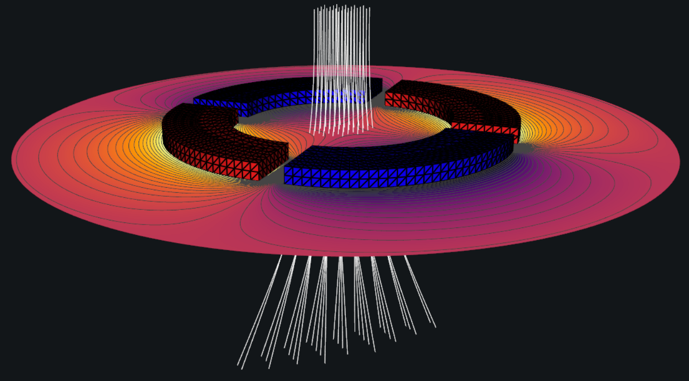

Model the electrostatic and magnetic elements that steer and focus charged-particle beams—including einzel lenses, deflectors, solenoids, and bending magnets. Voltrace's scalable BEM/FMM solver handles large, detailed geometries with millions of boundary elements while preserving accuracy along the beam path.
Fast design iterations let you explore beam-line configurations quickly, evaluating focusing and transport behaviour with reliable, physics-aligned results—so you can converge on a design with confidence.
- Einzel lenses, deflectors, and bending magnets
- Large-scale geometries via the Fast Multipole Method
- Beam focusing and transport analysis
- Rapid design-iteration loops
